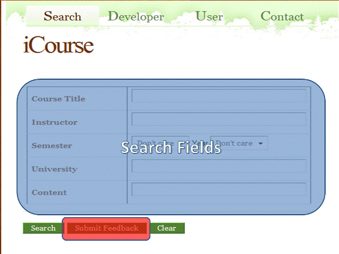
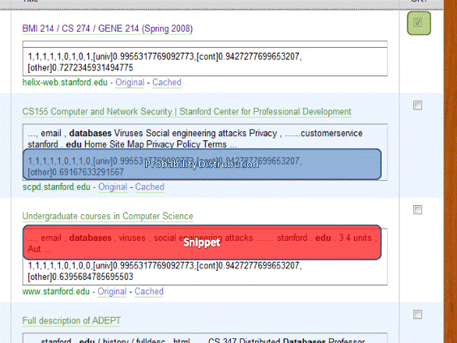

User Manual
Illinois Course Recommendation & Search EngineThe iCourse software is a server implementable search engine that is designed to aid the user in order to be able easily locate course homepages based on a limited amount of information or keywords. The usage of this system has been laid out in a simple and straightforward pattern that will allow the user to easily search for something they are looking for and in turn provide relevant recommendations in terms of course websites and relevant information contained within them.
Fields:
The individual fields are developed as such that they allow for the user to use a limited amount of information to produce accurate and germane results. As such the engine is not only a resource to search for homepages but rather also a recommendation tool for interests that the user might hold.
Submit Feedback:
Submitting feedback is the best means of constantly improving our search engine, as being in its infant stages we allow the user to provide helpful feedback by marking the document they were searching for, in order to be able to correctly determine what our search engine should be looking for! Thus we provide the following interface next to your search results allowing you to constantly improve our search engine.
Let us take an example:
I am looking for a course homepage at stanford that covers databases, I don't know what the title of the course is, nor who is teaching it, but I do know that I might consider taking it in the future!
Given the search terms then:
- University: stanford
- Content: databases
Perhaps I can find what I am looking for...
Great I found the page I was looking for thus I checkmark it, click the feedback button as a courtesy, and head on over to the link.
Search Aids:
Our system is designed such that it is able to retrieve relevant course information from the page that might aid you in your search process called a snippet. Finally we have a probability distribution that allows you too look at the relevancy of the result to your individual search criterion and finally it lets you look at the possibility of which the page you might be going to is actually a search page.
As such these are tools available to you in the use of our search engine, we hope you enjoy your experience.